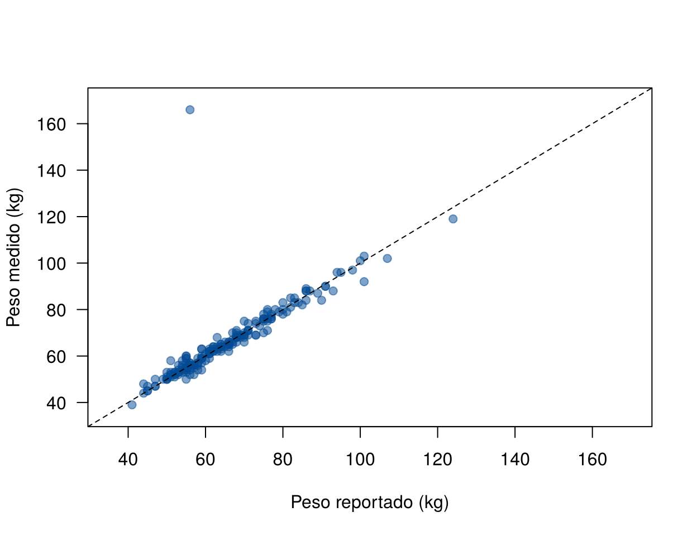
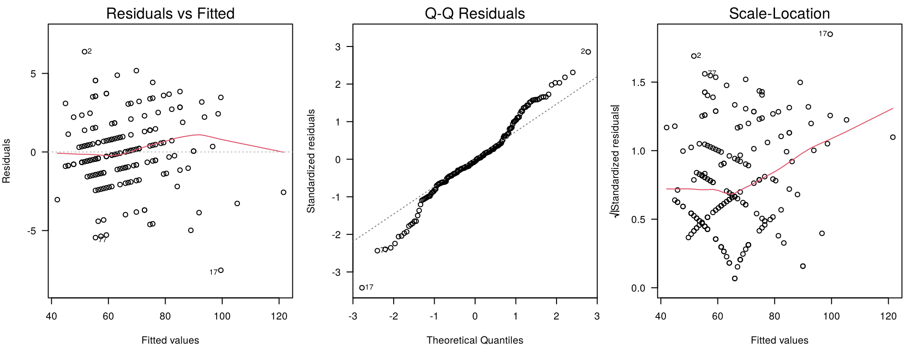

Este caso reúne en un solo análisis lo visto en la unidad, siguiendo los ocho pasos para construir un modelo de regresión lineal simple (Modelo de regresión lineal simple): recolectar, explorar y procesar los datos, elegir, entrenar y evaluar el modelo, interpretarlo y usarlo para predecir. Se trabaja con datos reales que no se han usado en las otras páginas.
La pregunta es: ¿el peso que una persona reporta sirve para conocer su peso real? En muchas encuestas de salud no se pesa a las personas: se les pregunta cuánto pesan. Si el peso reportado se relaciona bien con el medido, se puede usar el modelo para corregirlo.
Los bloques de código se ejecutan en orden.
Davis (1990) estudió a 200 hombres y mujeres que hacían ejercicio con
regularidad. A cada persona le preguntó su peso y su estatura, y luego
la pesó y la midió. Los datos vienen en el paquete carData
de R (Fox y Weisberg, 2019); aquí se usa una copia con
los nombres en español.
Los datos se descargan aquí:
peso.csv. Guarde el archivo en la
carpeta data de su proyecto de
RStudio.
| Variable | Qué mide |
|---|---|
id |
Número de la persona (1 a 200) |
sexo |
Mujer u Hombre |
peso, estatura |
Peso medido (kg) y estatura medida (cm) |
peso_reportado,
estatura_reportada |
Peso (kg) y estatura (cm) que dijo la persona |
datos <- read.csv("data/peso.csv")
dim(datos)[1] 200 6head(datos) id sexo peso estatura peso_reportado estatura_reportada
1 1 Hombre 77 182 77 180
2 2 Mujer 58 161 51 159
3 3 Mujer 53 161 54 158
4 4 Hombre 68 177 70 175
5 5 Mujer 59 157 59 155
6 6 Hombre 76 170 76 165Dos características del diseño importan para el modelo:
summary(datos[, c("peso", "estatura", "peso_reportado", "estatura_reportada")]) peso estatura peso_reportado estatura_reportada
Min. : 39.0 Min. : 57.0 Min. : 41.00 Min. :148.0
1st Qu.: 55.0 1st Qu.:164.0 1st Qu.: 55.00 1st Qu.:160.5
Median : 63.0 Median :169.5 Median : 63.00 Median :168.0
Mean : 65.8 Mean :170.0 Mean : 65.62 Mean :168.5
3rd Qu.: 74.0 3rd Qu.:177.2 3rd Qu.: 73.50 3rd Qu.:175.0
Max. :166.0 Max. :197.0 Max. :124.00 Max. :200.0
NA's :17 NA's :17 colSums(is.na(datos)) id sexo peso estatura
0 0 0 0
peso_reportado estatura_reportada
17 17 Faltan 17 pesos reportados. El gráfico compara el peso medido con el reportado. La línea punteada es la recta de igualdad, \(y = x\): si todos dijeran su peso exacto, los puntos estarían sobre ella.
plot(peso ~ peso_reportado, data = datos, pch = 19, col = "#034A9480", las = 1,
xlab = "Peso reportado (kg)", ylab = "Peso medido (kg)",
xlim = c(35, 170), ylim = c(35, 170))
abline(0, 1, lty = 2)
Peso medido y peso reportado. La línea punteada es la recta de igualdad.
Casi todos los puntos están cerca de la recta de igualdad, pero hay uno muy lejos: una persona que reportó 56 kg y pesó 166 kg.
Antes de modelar se revisa el punto extraño:
datos[datos$id == 12, ] id sexo peso estatura peso_reportado estatura_reportada
12 12 Mujer 166 57 56 163Es una mujer con un peso medido de 166 kg y una estatura medida de 57 cm, que dijo pesar 56 kg y medir 163 cm. Una persona adulta de 57 cm es imposible: los dos valores medidos se digitaron al revés. El peso real es 57 kg y la estatura 166 cm, que coinciden con lo que ella reportó. Es un error que se puede corregir, así que se corrige en lugar de eliminar la fila (Puntos atípicos e influyentes):
datos$peso[datos$id == 12] <- 57
datos$estatura[datos$id == 12] <- 166Las 17 personas sin peso reportado no pueden entrar al modelo. Antes de quitarlas conviene ver si se parecen a las demás (Datos faltantes):
datos$falta <- is.na(datos$peso_reportado)
aggregate(peso ~ falta, data = datos, FUN = function(x) round(c(media = mean(x), mediana = median(x)), 1)) falta peso.media peso.mediana
1 FALSE 65.6 63.0
2 TRUE 61.2 59.0table(datos$sexo, datos$falta)
FALSE TRUE
Hombre 82 6
Mujer 101 11completos <- datos[!datos$falta, ]
nrow(completos)[1] 183Las personas sin el dato pesan, en promedio, unos 4 kg menos, y entre ellas hay más mujeres. La diferencia es pequeña y son pocas personas, así que se trabaja con los 183 casos completos y se informa que faltaban esos datos.
La respuesta es el peso medido y la variable explicativa es el peso reportado, porque lo que se quiere es estimar el peso real a partir de lo que la persona dice:
\[ \text{peso}_i = \beta_0 + \beta_1 \, \text{reportado}_i + \varepsilon_i, \qquad \varepsilon_i \sim N(0, \sigma^2) \]
El gráfico del paso 2 muestra una relación recta, así que no se necesita transformar. Si las personas reportaran su peso sin error sistemático, el modelo sería la recta de igualdad: \(\beta_0 = 0\) y \(\beta_1 = 1\). Esas son las hipótesis interesantes del caso.
modelo <- lm(peso ~ peso_reportado, data = completos)
summary(modelo)
Call:
lm(formula = peso ~ peso_reportado, data = completos)
Residuals:
Min 1Q Median 3Q Max
-7.5270 -1.0942 -0.1151 1.1133 6.3834
Coefficients:
Estimate Std. Error t value Pr(>|t|)
(Intercept) 2.7480 0.8109 3.389 0.000862 ***
peso_reportado 0.9582 0.0121 79.222 < 0.0000000000000002 ***
---
Signif. codes: 0 '***' 0.001 '**' 0.01 '*' 0.05 '.' 0.1 ' ' 1
Residual standard error: 2.248 on 181 degrees of freedom
Multiple R-squared: 0.972, Adjusted R-squared: 0.9718
F-statistic: 6276 on 1 and 181 DF, p-value: < 0.00000000000000022La recta estimada es
\[ \widehat{\text{peso}} = 2.75 + 0.958 \times \text{reportado} \]
con \(R^2 = 0.972\) y \(\hat{\sigma} = 2.25\) kg: el peso reportado da cuenta de casi toda la variación del peso medido, y la distancia típica entre el peso real y la recta es de unos 2 kg.
¿Qué habría pasado sin corregir el error del paso 3?
original <- read.csv("data/peso.csv")
modelo_error <- lm(peso ~ peso_reportado, data = original)
round(rbind(con_error = c(coef(modelo_error), r2 = summary(modelo_error)$r.squared,
sigma = sigma(modelo_error)),
corregido = c(coef(modelo), r2 = summary(modelo)$r.squared,
sigma = sigma(modelo))), 3) (Intercept) peso_reportado r2 sigma
con_error 5.336 0.928 0.699 8.419
corregido 2.748 0.958 0.972 2.248Una sola fila mal digitada, de 183, bajaba \(R^2\) de 0.97 a 0.7 y multiplicaba \(\hat{\sigma}\) por más de 3.
Gráficos de residuales.
par(mfrow = c(1, 3), mar = c(4, 4, 2, 1))
plot(modelo, which = 1:3, las = 1)
Gráficos de diagnóstico del modelo del peso.
Los residuales forman una franja horizontal, sin curva. Las líneas diagonales que se ven dentro de la franja aparecen porque los pesos se midieron y se reportaron en kilogramos enteros; no indican un problema. El gráfico Q-Q muestra colas algo más largas que las de la normal: hay algunas personas que se equivocaron por más de 5 kg. En el tercer gráfico la línea roja sube a la derecha: la dispersión es un poco mayor en las personas más pesadas.
Pruebas. Se fija \(\alpha = 0.05\) antes de verlas:
library(lmtest)
anova(modelo, lm(peso ~ factor(peso_reportado), data = completos)) # falta de ajusteAnalysis of Variance Table
Model 1: peso ~ peso_reportado
Model 2: peso ~ factor(peso_reportado)
Res.Df RSS Df Sum of Sq F Pr(>F)
1 181 914.66
2 130 664.63 51 250.03 0.9589 0.5574bptest(modelo) # varianza constante
studentized Breusch-Pagan test
data: modelo
BP = 5.9547, df = 1, p-value = 0.01468shapiro.test(rstandard(modelo)) # normalidad
Shapiro-Wilk normality test
data: rstandard(modelo)
W = 0.98057, p-value = 0.01187| Supuesto | Resultado | Conclusión |
|---|---|---|
| Linealidad | Falta de ajuste: p = 0.56 | No hay evidencia contra la recta |
| Varianza constante | Breusch-Pagan: p = 0.015 | Hay evidencia de que la varianza cambia con el peso |
| Normalidad | Shapiro-Wilk: p = 0.012 | Colas más largas que la normal |
| Independencia | Por el diseño | No hay razones para dudar |
Con 183 datos, la falta de normalidad casi no afecta las pruebas sobre la pendiente (Supuestos del modelo). La varianza no constante sí afecta los errores estándar, así que las pruebas del paso 7 se hacen con errores estándar robustos (Varianza no constante). La falta de normalidad sí importa para el intervalo de predicción del paso 8.
Puntos influyentes.
cook <- cooks.distance(modelo)
sort(cook, decreasing = TRUE)[1:3] 17 21 54
0.25451565 0.08450064 0.06544550 completos[completos$id %in% c(17, 21), c("id", "sexo", "peso", "peso_reportado")] id sexo peso peso_reportado
17 17 Hombre 92 101
21 21 Hombre 119 124La persona 17 dijo pesar 101 kg y pesó 92 kg. Su distancia de Cook (0.25) es la mayor, pero está lejos de 1 y no hay nada imposible en sus datos: es un caso real que se conserva. Sin ella, la pendiente cambia poco:
c(con_17 = coef(modelo)[2],
sin_17 = coef(lm(peso ~ peso_reportado, data = completos[completos$id != 17, ]))[2])con_17.peso_reportado sin_17.peso_reportado
0.9582079 0.9662521 Se prueba si la pendiente es 1 y si el intercepto es 0, con errores
estándar robustos (HC3). El paquete sandwich calcula la
matriz de varianza robusta:
library(sandwich)
v_rob <- vcovHC(modelo, type = "HC3")
ee_rob <- sqrt(diag(v_rob))
t_pend <- (coef(modelo)[2] - 1) / ee_rob[2]
t_inter <- (coef(modelo)[1] - 0) / ee_rob[1]
gl <- df.residual(modelo)
round(c(t_pendiente = unname(t_pend), p_pendiente = unname(2 * pt(-abs(t_pend), gl)),
t_intercepto = unname(t_inter), p_intercepto = unname(2 * pt(-abs(t_inter), gl))), 4) t_pendiente p_pendiente t_intercepto p_intercepto
-2.7000 0.0076 2.7841 0.0059 coefci(modelo, vcov = v_rob) 2.5 % 97.5 %
(Intercept) 0.8003922 4.6955753
peso_reportado 0.9276661 0.9887497Se rechazan las dos hipótesis: la recta no es la de igualdad. Con 95 % de confianza, la pendiente está entre 0.928 y 0.989, por debajo de 1.
¿Qué significa en kilogramos? Las dos rectas se cruzan donde \(\hat{\beta}_0 + \hat{\beta}_1 x = x\), es decir, en \(x = \hat{\beta}_0 / (1 - \hat{\beta}_1)\):
cruce <- coef(modelo)[1] / (1 - coef(modelo)[2])
cruce(Intercept)
65.7537 predict(modelo, data.frame(peso_reportado = c(50, 90))) 1 2
50.65838 88.98670 Las diferencias son de alrededor de 1 kg: estadísticamente claras, pero pequeñas en la práctica. Parte de este patrón puede deberse a la regresión hacia la media: el peso reportado tiene su propio error, y quienes reportan valores extremos tienden, en promedio, a estar más cerca del centro de lo que dicen.
Si una persona de esta población dice pesar 70 kg, ¿cuánto pesa?
predict(modelo, data.frame(peso_reportado = 70), interval = "prediction") fit lwr upr
1 69.82254 65.3736 74.27147Con 95 % de confianza, pesa entre 65.4 y 74.3 kg. Antes de usar el modelo con casos nuevos hay que tener en cuenta:
Se analizaron 183 personas que hacen ejercicio con regularidad y que reportaron su peso; a una se le corrigió un error de digitación. El peso medido se relacionó casi de forma perfecta con el reportado (\(R^2 = 0.97\)). La pendiente fue 0.958 (IC 95 % con errores robustos: 0.928 a 0.989), menor que 1: quienes reportan pesos bajos tienden a pesar un poco más de lo que dicen, y quienes reportan pesos altos, un poco menos, con diferencias de alrededor de 1 kg. La desviación estándar residual fue de 2.2 kg, así que el peso reportado sirve para estimar el peso de un grupo, pero para una persona el error puede ser de varios kilogramos.
| Problema | Causa | Solución |
|---|---|---|
| Modelar sin graficar | Se confía en summary() |
El gráfico del paso 2 mostró el error de digitación |
| Eliminar un error que se puede corregir | Se borra lo que molesta | Si se sabe el valor correcto, se corrige y se informa |
| Probar solo \(\beta_1 = 0\) | Es la prueba que muestra summary() |
Plantear la hipótesis que responde la pregunta: aquí, \(\beta_1 = 1\) |
| Confundir significancia estadística con importancia práctica | Con muchos datos, diferencias pequeñas son significativas | Traducir los coeficientes a las unidades del problema |
| Usar el modelo con otra población | Se olvida cómo se recogieron los datos | Limitar las conclusiones a la población estudiada |
Ajuste el modelo por separado para mujeres y para hombres. ¿Se parecen las pendientes? ¿En qué grupo es mayor \(\hat{\sigma}\)?
m_mujer <- lm(peso ~ peso_reportado, data = completos, subset = sexo == "Mujer")
m_hombre <- lm(peso ~ peso_reportado, data = completos, subset = sexo == "Hombre")
round(rbind(mujeres = c(coef(m_mujer), sigma = sigma(m_mujer)),
hombres = c(coef(m_hombre), sigma = sigma(m_hombre))), 3) (Intercept) peso_reportado sigma
mujeres 1.778 0.977 2.057
hombres 1.794 0.969 2.475Compare las pendientes con sus intervalos (confint())
antes de concluir que son distintas. Para probar formalmente si difieren
se necesita un modelo con las dos variables, que se estudia en la
regresión múltiple.
Repita los pasos 4 a 7 con la estatura medida como respuesta y la estatura reportada como variable explicativa. ¿Las personas reportan bien su estatura?
completos_e <- datos[!is.na(datos$estatura_reportada), ]
m_est <- lm(estatura ~ estatura_reportada, data = completos_e)
coef(m_est) (Intercept) estatura_reportada
12.9533978 0.9354476 coefci(m_est, vcov = vcovHC(m_est, type = "HC3")) 2.5 % 97.5 %
(Intercept) 6.7456006 19.1611949
estatura_reportada 0.8986501 0.9722452mean(completos_e$estatura - completos_e$estatura_reportada)[1] 2.076503Revise si el intervalo de la pendiente incluye 1. En estos datos, la estatura medida es en promedio 2.1 cm mayor que la reportada: las personas tendieron a reportar una estatura un poco menor que la real.
Con la base original (sin corregir la fila 12), calcule el apalancamiento, el residual estudentizado y la distancia de Cook de esa persona. ¿Qué tipo de punto inusual es?
completos_o <- original[!is.na(original$peso_reportado), ]
m_o <- lm(peso ~ peso_reportado, data = completos_o)
fila <- which(completos_o$id == 12)
round(c(h = hatvalues(m_o)[fila], rstudent = rstudent(m_o)[fila], cook = cooks.distance(m_o)[fila]), 3) h.12 rstudent.12 cook.12
0.008 48.430 0.690 Su peso reportado (56 kg) está cerca del centro de los datos, así que su apalancamiento es bajo. Pero su residual estudentizado es enorme. Es un atípico: infla mucho \(\hat{\sigma}\) y baja \(R^2\). Como su residual es tan extremo, también mueve la pendiente (de 0.958 a 0.928) y tiene una distancia de Cook alta, aunque su apalancamiento sea bajo.
Última revisión: 9 de noviembre de 2026.